1 Collaborate
Learning Objectives
- Create a Github repository (or “repo”).
- Synchronize local files (using
git commit&git pushplusgit pull) with a Github repository. - Use RStudio’s Git pane.
- Branch and Fork repos.
- Handle file merge conflicts.
- Contribute file changes to any public Github repo with
pull request. - Manage projects in Github with Issues and Project boards. Understand how to reference Issues (e.g.
#2) in Github commit messages as well as mention other Github users (e.g.@bbest). - Write markdown (e.g.
README.md) to format text, and yaml (e.g._site.yml) for configurations. - Use the 3 components of an Rmarkdown: 1) frontmatter in yaml; 2) markdown text; and 3) R code as chunks or inline.
- Create an Rmarkdown website with a
_site.yml.
Prerequisites
R Skill Level: Beginner - you’ve run a few commands in R, hopefully from RStudio.
1.1 Background: Software & Github Workflows
1.1.1 What are Git & Github?
The two main version control tools are:
Git is a command-line version control system that lets you track changes to files over time. These files can be any kind of file (eg doc, pdf, xls), but free text differences are most easily visible (eg txt, csv, md). This facilitates a playground for collaboration, without fear of experimentation (you can always rollback changes).
Github is a website for storing your git versioned files remotely. It has many nice features to be able visualize differences between images, rendering & diffing map data files, render text data files, and track changes in text.
1.1.2 What are R & RStudio?
The two main programming tools you’ll be using are:
R is the scientific programming language.
RStudio is the integrated development environment (IDE) that provides a robust coding environment to write and execute R code. I recommend reviewing the 2-page RStudio IDE Cheat Sheet (also available in the RStudio interface through the menu Help -> Cheat Sheets -> RStudio IDE Cheat Sheet) for getting a quick grasp of the panes and keyboard shortcuts.
1.1.3 Github Workflows
There are a variety of ways to interact with a Github repository, or REPO for short, which is a collection of files, possibly organized within folders. On Github every repo is associated with an OWNER, which can be a Github organization or a Github user. Repos are consistently found at github.com/OWNER/REPO.
If you have write permissions to the repo, then you can git push changes to it directly. These changes are always first packaged as a set of file differences by a git commit that requires a message.
If you do not have write permissions to the repo, then you need to Github fork that repo into your own user-writable space (user or organization). After you make changes to the files in your user-writable repo (with git commit and git push), you can then request those changes be pulled into the original repo with a Github pull request.
Furthermore, you can git branch a snapshot of the repo files into a sandbox for continuing to make changes, such as to fix a bug or implement a new feature. This branch won’t affect the main branch until you’re ready to git merge those changes, so it isolates development.
These aspects give rise to different workflows with increasing complexity that we’ll incrementally try out with exercises, so you can become comfortable managing your own code, contributing to other open-source projects, and working on a set of code without trampling on other people’s work.
1.1.3.1 Simple: push & pull
The simplest workflow for tracking file changes is to simply git push changes into your Github repo, assuming you have write permissions to that repo. If you’re working with anyone else or editing on more than one computer, then you’ll want to git pull changes at the beginning of each session to capture changes and minimize potential conflicts before proceeding with any edits and subsequent git commit and git push commands.
The exact steps can be described in the table below. After the Github create repo step, you git clone it to get a copy of it onto your machine (with the hidden .git folder containing the configuration). Then you make changes on files and package differences with git commit, which requires a message every time and can happen offline. You’ll need to be online to then run git push to publish those changes back to the Github repo. Then before subsequent changes, you’ll want to update your machine with a git pull.
| repo location | initialize | edit | update |
|---|---|---|---|
github.com/OWNER/REPO |
create | ||
~/github/REPO |
clone | commit , push | pull |
1.1.3.2 Contribute: fork & pull request
If you don’t have write access to a Github repo, such as with any open-source project, then you can Github fork somebody else’s repo into your own user-writable space (i.e. OWNER being a Github user or organization) where you have write permissions. There you can make changes (using git commit and git push). When you’re ready to submit changes to the original repo, you make a pull request queuing these changes up for the owner(s) of the original repo to review and accept with a merge, reject or ignore. Github facilitates the conversation that may follow, including the ability to update the pull request before performing the final merge.
| repo location | USER permission |
initialize | edit | update |
|---|---|---|---|---|
github.com/OTHER/REPO |
read only | merge | ||
github.com/OWNER/REPO |
read + write | fork | pull request | pull request , merge |
~/github/REPO |
read + write | clone | commit , push | pull |
1.1.3.3 Sandbox: branch & merge
Even if you’re able to write directly to the repo, you may be collaborating with others and not want to step on their proverbial coding toes. By performing a git branch, you’re taking a snapshot of the files and isolating them into your own sandbox. For instance let’s say you’re working on a new feature, then you might call your branch generically new-feature. Subsequent changes to the files in the Github repo (with git commit and git push) do not then affect the main branch until a git merge is executed to fold these changes of new-feature into the main branch.
| repo location | USER permission |
initialize | edit | update |
|---|---|---|---|---|
github.com/OWNER/REPO branch: main |
read + write | |||
~/github/REPO branch: main |
read + write | clone | merge , push | |
~/github/REPO branch: new-feature |
read + write | branch | commit | pull |
The scenario above shows the branch and merge happening locally, but you can also execute these on Github. The RStudio IDE provides the ability to create a new branch locally, but then to perform the git merge you need to do this in its Terminal.
1.1.3.4 Pro: branch, pull request & merge
Extending the Sandbox workflow to full “professional” status, even if you have the administrative ability on the repo to perform a git merge you may wish to first advertise your proposed file changes to other contributors with a pull request. This then allows others to review and discuss changes before an admin then performs the final git merge. This is the recommended workflow described in Understanding the GitHub flow · GitHub Guides:

We want go over this entire workflow in this lesson, but it simply combines all the techniques above.
1.2 Setup Github & Git & RStudio
Create Github account at http://github.com, if you don’t already have one. For username, I recommend all lower-case letters, short as you can. If you use an email ending in
.edu, you can request free private repositories via GitHub Education discount.Install the latest software, per Setup:
Configure git with global commands to tell it who you are. Open the Terminal in RStudio and type the following. Be sure to replace
USERandUSER@SOMEWHERE.ORGwith yours (e.g. mine isbbestandben@ecoquants.com):# display your version of git git --version # display the path to git on Mac/Linux which git # display the path to git on Windows where git # replace USER with your Github user account git config –-global user.name USER # replace USER@SOMEWHERE.ORG with the email you used to register with Github git config –-global user.email USER@SOMEWHERE.ORG # use git merge (default) instead of git rebase to resolve git pull conflicts git config --global pull.rebase true # list your config to confirm user.* variables set git config --listTell RStudio where to find Git. In the RStudio menu, go to Tools -> Global Options and select the Git/SVN sidebar menu:

Here you Browse and select the Git executable based on the path found from the above commands dependening on your operating system in the Terminal (
which giton Mac/Linux;where giton Windows).If you run into any problems, please consult more thorough documentation in Chapter 13 Detect Git from RStudio | Happy Git and GitHub for the useR. If you’re still stuck, please email me ben@ecoquants.com or better yet look at existing Issues · noaa-iea/r3-train and from there Create a new issue describing the problem, any error messages and the operating system with version numbers of software being used.
1.3 Create Github Repository r3-exercises
Now you will create a Github repository. This will be the source code of an Rmarkdown website that will house your work completing all the exercises for this course.
With your web browser, sign into Github.com and visit your Github user page (i.e.
https://github.com/USER) and Create a repository calledr3-exercises.
Please tick the box to Add a README file. I optionally included “Exercises from https://noaa-iea.github.io/r3-train” in the Description. Otherwise the defaults are fine.
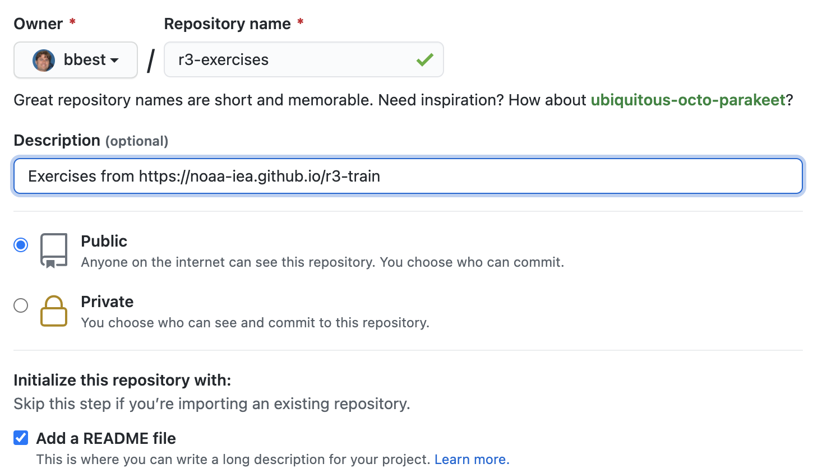
You should now see this repo at https://github.com/USER/r3-exercises.
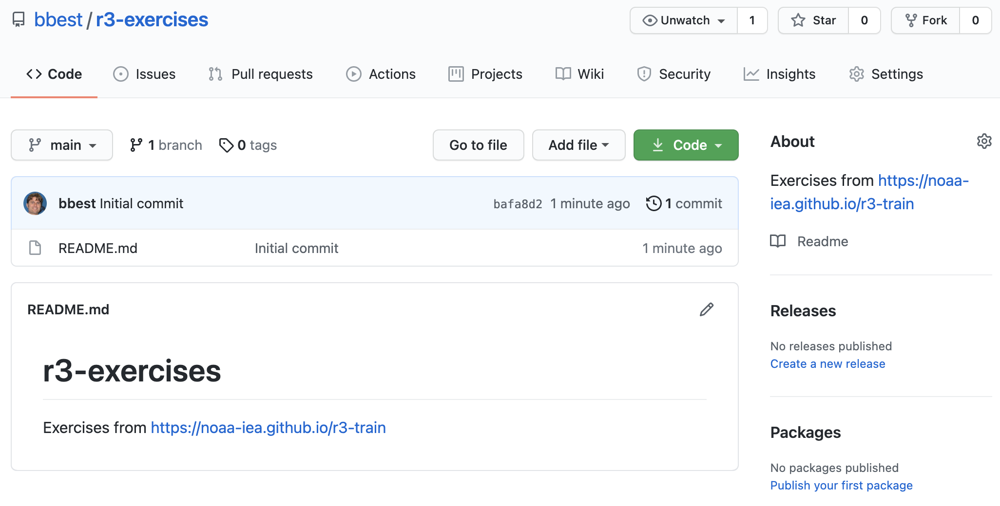
README.md
Notice that the only file in the repo so far is the README.md, which is in markdown format (.md) and its contents are displayed directly below, which is the special case for any README.md file in a Github folder. Clicking on the pencil icon to edit, reveals the source for this file:
# r3-exercises
Exercises from https://noaa-iea.github.io/r3-trainClicking on the Preview tab shows the formatted result. Note how the # is used to create a header and the link is automatically generated:

For more on formatting text with markdown within Github, check out Mastering Markdown · GitHub Guides.
1.4 Create RStudio Project
Next, you’ll use RStudio to initialize this project in two important ways:
You’ll let RStudio run
git cloneto copy the git repository onto your machine containing theREADME.mdand importantly a hidden folder.git/which contains all file history and the configuration on where to synchronize files, i.e. Github.By creating an RStudio Project, you’ll create an
r3-exercises.Rprojfile. This will be an executable that you can double-click on from Windows Explorer or Mac Finder that will open RStudio and set the working directory to that containing folder. This assures that others who similarly open the project will start with the same working directory, so relative paths to other files in the repo will work regardless of where that repo lives on an individual machine. This is important for making your R code portable for others to use.
From RStudio menu File -> New Project…

Choose Version Control -> git and enter the Repository URL with the .git extension.
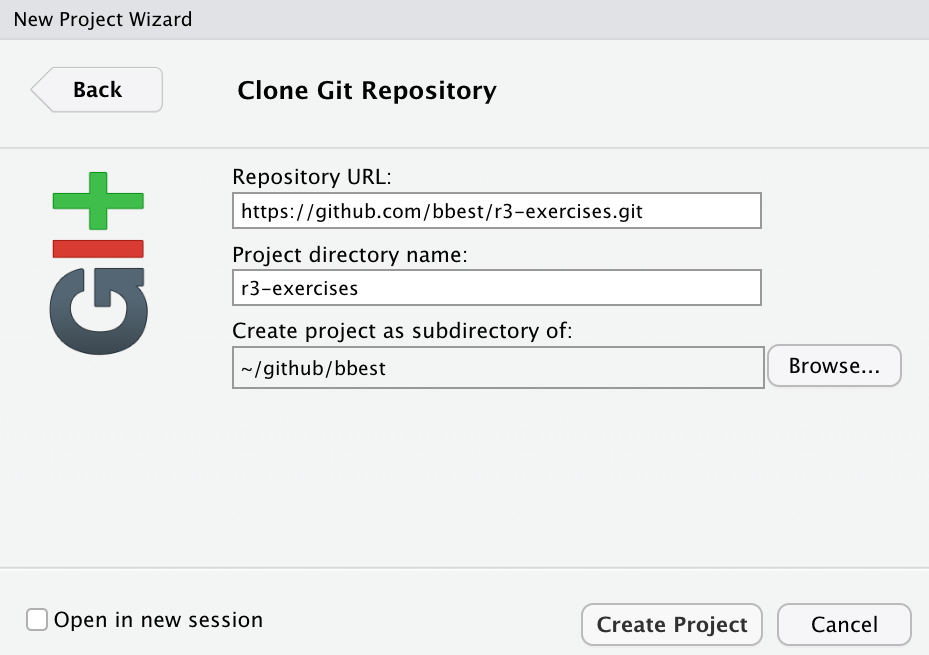
This Repository URL is also easily copied into your clipboard from your web browser by clicking on the green Code button of your new repository (i.e. https://github.com/USER/r3-exercises):

Then paste (Ctrl + V) into the Repository URL field of the form.
I chose to Create the project as a subdirectory of ~/github/bbest which means my home directory (~) and subfolder bbest of folder github, but you can create it wherever makes sense on your computer. Be sure to swap any instance of USER bbest with your Github username.
If it all works correctly then you should see the files downloaded and showing up in the Files pane of RStudio. If RStudio is configured correctly to work with Git, then you should also see a Git pane.

.gitignore
Besides the desired RStudio Project file r3-exercises.Rproj, you should also see the .gitignore. This file describes files that git should ignore and so not prompt for asking. If you open the file in RStudio, you see it’s a simple text file listing hidden files (i.e. those starting with a . and not normally shown in Windows Explorer or Mac Finder) that RStudio uses.
.Rproj.user
.Rhistory
.RData
.Ruserdata1.5 Simple commit & push of r3-exercises
Note that in the Git pane, the yellow box question marks under Status next to .gitignore and r3-exercises.Rproj indicate these files are not known to the version control system (and asking should they be?). Ticking the boxes under Staged changes the Status to a turquoise A for added:
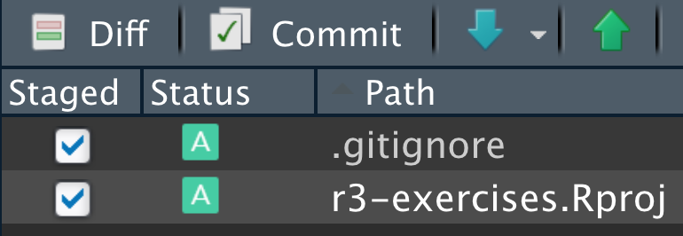
Now click the Commit button in the Git pane to open the Review Changes dialog window. Every commit requires a message.
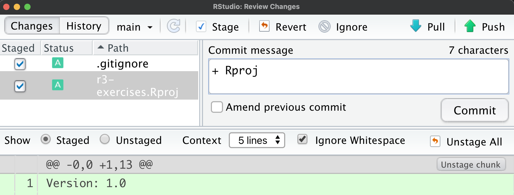
Click the Commit button in the Review Changes dialog window. You should see something like:

This is confirmation that these 2 files were changed with 17 new lines and the hash 8367334 uniquely identifies this commit. Close this dialog. Note how now “Your branch is ahead of ‘orgin/main’ by 1 commit”:

The previous git commit operation happened only on the local machine. The “origin” is Github and “main” referring to the main branch. Next, you need to Push these changes by clicking on the button in the upper right. You should get confirmation like:

You should now see these two new files showing up in your repo at https://github.com/USER/r3-exercises. These files are displayed with the filename, most recent commit message associated with any changes and the time since last update.
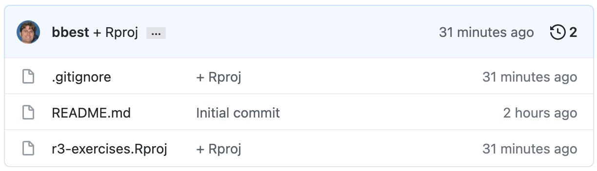
1.6 Create index.Rmd
Next we’ll create an Rmarkdown file and render it to html. By calling it index.Rmd and rendering to index.html, this will become the default web page of the repository since web servers serve index.html as the default for the folder.
Rmarkdown files weave markdown text with chunks of R code to be evaluated and output content like tables and plots.
In the RStudio menu choose File -> New File -> Rmarkdown…. Give it a Title like “R3 Exercises” and go with Default Output Format HTML.

After you click OK, File -> Save as (or Ctrl + S) index (which will get named with the filename extension index.Rmd).
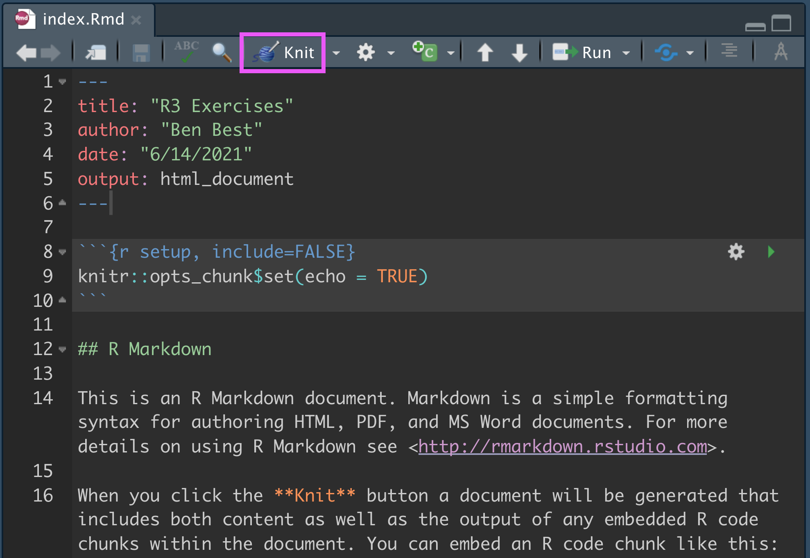
Some initial text is already provided for you. Let’s go ahead and render to html by clicking the Knit button (highlighted with a pink box above).
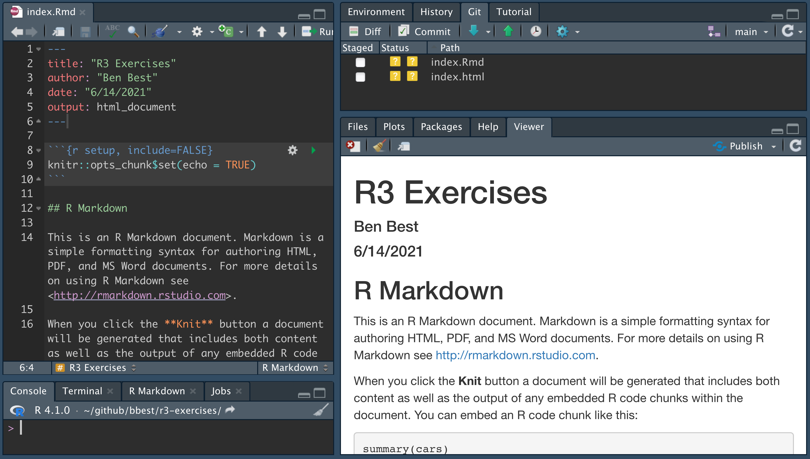
The Viewer pane now shows the rendered html. Also notice the unversioned files. Let’s get these onto our Github repo by going into the Git pane like previously, ticking the Staged boxes, clicking Commit, adding a message like “+ index”:
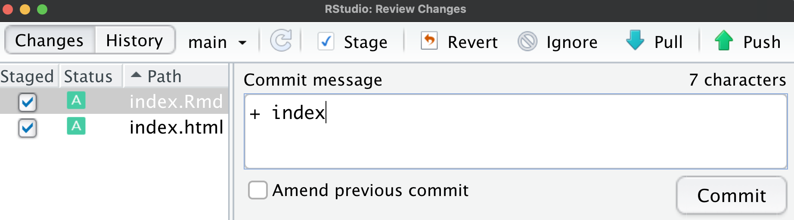
Click on Commit in the dialog. Close the Git Commit window and then click on Push so your branch is not ahead of the origin Github.
You should now see these two new index.* files showing up in your repo at https://github.com/USER/r3-exercises.
We’ll get back to Rmarkdown, but first let’s get this website served up.
1.7 Setup Github Pages website
Github Pages allows you to serve up simple websites from your Github repo. Let’s turn on this feature by visiting the Settings tab in https://github.com/USER/r3-exercises. Then click the Pages menu from the left navbar, choose Branch: main, folder / (root):
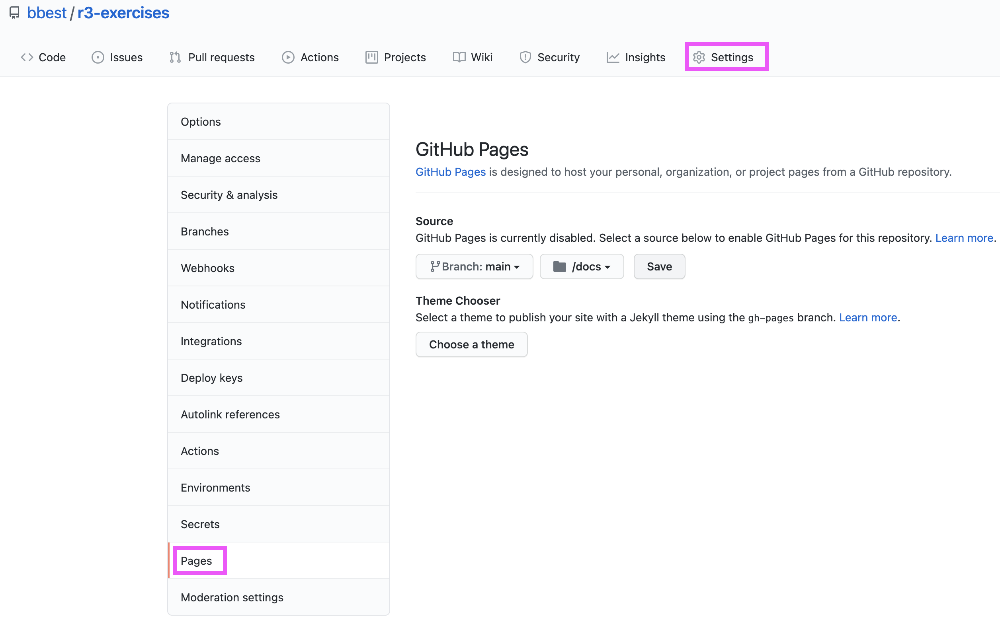
Click Save. You should now see that the site is “ready to be published”:

You should now be able to visit the website URL:
https://USER.github.io/r3-exercises
Notice how the URL is a slight rearrangement of your Github repo URL:
https://github.com/USER/r3-exercises
For easily referencing the website, I recommend returning to the Github repo https://github.com/USER/r3-exercises, clicking the upper right About cog and adding it to the Website entry:

You should now see a handy link to get to your website similar to this:
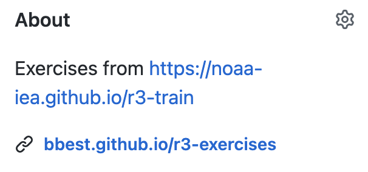
1.8 Contribute to r3-train with fork & pull request
So far you’ve been using the Simple workflow with git push and git pull on your USER/r3-exercises repo. Next, you’ll learn how to contribute towards a repo for which you don’t have write permissions.
You don’t have write permissions to the noaa-iea/r3-train repo where these training materials are stored. The task is to contribute to this repo with a single line of your information in data/roster.csv, which gets used to generate the course Roster.
To do so, please visit github.com/noaa-iea/r3-train and in the upper right, click Fork:
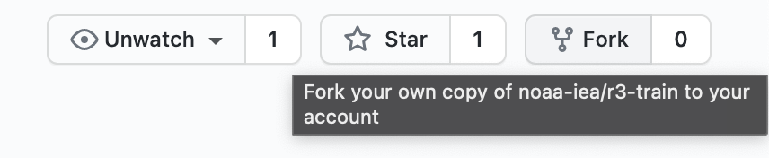
Next, choose your Github USER name as the owner:

Notice how the URL changed from github.com/noaa-iea/r3-train to github.com/USER/r3-train:

You now have write permissions on this repo. Please proceed with previous steps above to Create Github RStudio Project, except this time using https://github.com/USER/r3-train.git as the URL. Be sure to replace USER with your Github username. Also be sure to clone your r3-train repository into it’s own dedicated folder, NOT inside _your r3-exercises folder or any other existing git repo.
Once you have the r3-train RStudio Project open, please open from the Files pane data/roster.csv by clicking on it and View File:

Enter your information at the end of the file instead of:
USER,FIRST LAST,https://USER.github.io/r3-exercisesSave the changes and in the Git pane tick the Staged box next to data/roster.csv showing a blue M for Modified. Click on Commit and enter a message like “+ USER” except swapping your Github username. Push the changes.
In your browser return to https://github.com/USER/r3-train. You’ll notice that this branch is “1 commit ahead of noaa-iea:master”. Click on Contribute:

Then click on Open pull request. You should be taken to a screen asking for confirmation:

Click on Create pull request. Normally, you’d like a comment explaining what this pull request is for:

Click on the final Create pull request. Now you should be taken to github.com/noaa-iea/r3-train (not your USER forked copy) and under the Pull requests see yours:

The image above shows a Merge pull request since I have admin privileges on this repo. You wouldn’t so would see it grayed out (or similar).
Good job! Nothing left for you to do except wait for me (as admin of this repo) to click on Merge pull request. Then I’ll re-render roster.Rmd to roster.html.
1.9 Sandbox r3-exercises for Rmd website with branch & merge
Next, you’ll up your Git skills by isolating development of your code in a new branch, which is like a Sandbox separate from the main branch, while converting your website from a simple Rmarkdown to an Rmarkdown website for sharing a common navigation menu across created Rmarkdown web pages.
Please switch back to your r3-exercises RStudio project where your website is hosted. (We’re done working with your forked copy of the r3-train project.) Notice that in the upper right of RStudio you get Project shortcuts to quickly navigate to them. Or you could always double-click on the *.Rproj file from your file explorer application (Windows Explorer or Mac Finder).
In RStudio’s Git pane click on the New Branch button and enter a Branch Name like “rmd-website”:

Click Create. You should now see your new branch. Notice how when you click on the dropdown of branches you see both LOCAL and REMOTE: ORIGIN (as in on Github) versions.
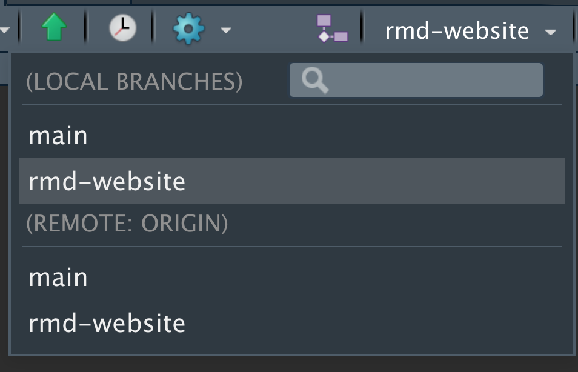
Following guidance from 10.5 rmarkdown’s site generator | R Markdown: The Definitive Guide, create a _site.yml by going to RStudio’s menu File -> New File -> Text File and paste the following:
name: "R<sup>3</sup>"
navbar:
title: "R<sup>3</sup> Exercises"
left:
- text: "Home"
href: index.html
- text: "Collaborate"
href: collaborate.html
output_dir: "."Save this file as _site.yml. Next create overwrite your index.Rmd with this simpler content:
---
title: "Welcome"
---
Hello, Website!Add another page collaborate.Rmd:
---
title: "Collaborate"
---
Like branches of a tree.Finally, render the website by running the following in your R Console:
rmarkdown::render_site()You might need to install the package rmarkdown, which you can do from RStudio’s Packages pane, Install button and typing “rmarkdown”.
Once complete, you should see that you’re working from the new branch selected in your RStudio Git pane, then click on the file to be presented with options:
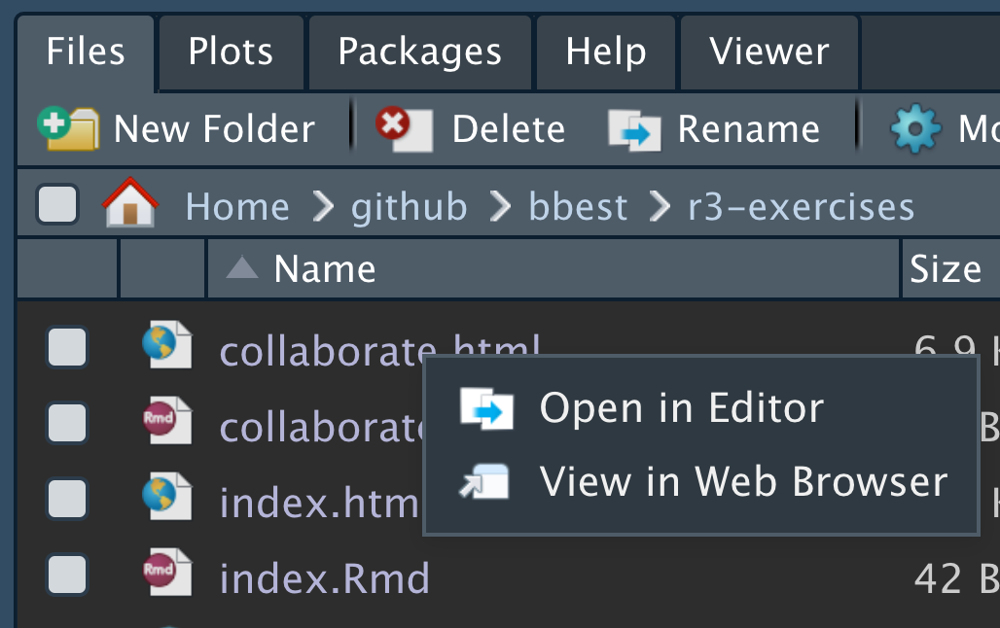
Select View in Web Browser to open your new website locally:
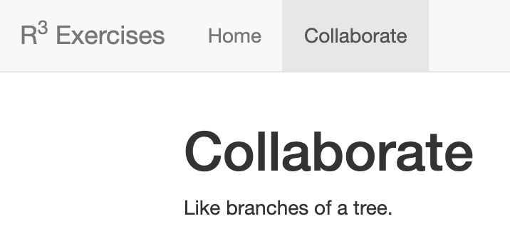
Now you’re ready to Commit and Push your changes. Once you’ve done that, please visit https://USER.github.io/r3-exercises. Notice that it’s still the old default Rmarkdown page. Now visit https://github.com/USER/r3-exercises and at first it looks like the changes are not showing up, but now you simply need to select the rmd-website branch to see those files in their own little sandbox:
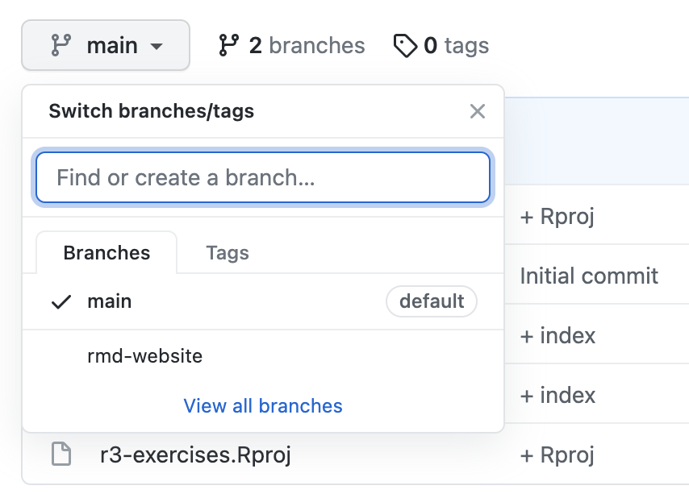
Returning to RStudio, you’re ready to git merge the changes in the rmd-website branch to the main branch. In RStudio’s Git pane switch back to the main branch:

You’ll probably see a warning like this:

That’s OK. It’s just Rstudio saying that it doesn’t see this file in your filesystem anymore since we just switched to the main branch’s snapshot of files. Click Yes and proceed with closing any other files with a similar prompt.
RStudio doesn’t provide a user interface to run the git merge command so you’ll have to do this in RStudio’s Terminal pane:

by entering:
git merge rmd-websiteYou’ve now merged your LOCAL changes from the rmd-website branch to the main branch, and see in the Git pane that “Your branch is ahead of ‘origin/main’ by 1 commit.” This means that you’re ready to git push them to the ORIGIN on Github by running good ol’ Push.
Now at last you should see these file changes showing up at https://github.com/USER/r3-exercises.
It might take a minute or so before they show up on your website at https://USER.github.io/r3-exercises. This is because Github Pages were originally designed to render static webpages with some templating capability (e.g. comman navigation menu) using Jekyll. To speed up rendering and disable Jekyll create an empty text file called .nojekyll. On a Mac, you can run this command in Terminal:
touch .nojekyllBe sure to Commit and Push these changes to Github.
1.10 Create an Issue in r3-exercises to resolve a file conflict
Next we’re going to play with some of the Github Project management features while learning how to resolve file conflicts when git has a conflict automatically merging competing commits.
Let’s visit your Github repo https://github.com/USER/r3-exercises and click on Issues:
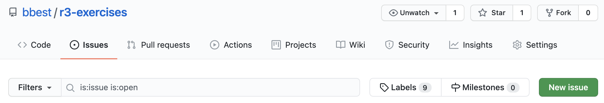
Click on the green New issue button and enter a title and comment like:
- Title: “resolve a file conflict”
- Comment:
Reference:
* [22.4 Dealing with conflicts | Happy Git and GitHub for the useR](https://happygitwithr.com/git-branches.html#dealing-with-conflicts)
When you switch the comment from Write to Preview, you’ll see how the markdown source gets formatted into html with a single item bulleted list and link. Now you’re ready to Submit new issue.
Ok, let’s create file conflict by editing the same line in two different places: 1) the Github website through your web browser, 2) your local machine through RStudio.
In your web browser, go to the Code tab of your Github repo at https://github.com/USER/r3-exercises. Click on index.Rmd and click the pencil icon to change it to:
---
title: "Welcome"
---
Hello, Github!Scroll down and notice enter a message under the Commit changes header of “edit from Github”:
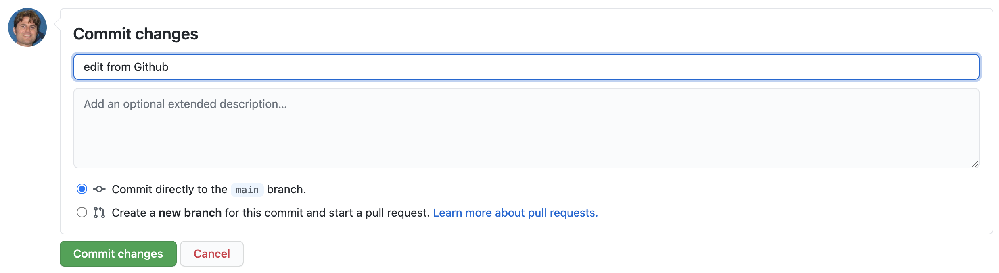
Click on the green Commit changes button. Since you’re already on Github, you don’t need to Push.
Now go to RStudio, open the index.Rmd and change it to:
---
title: "Welcome"
---
Hello, RStudio!Be sure to Commit those changes with the message “edit from RStudio”.
Next, Pull changes from Github. Now you’ll get a long and messy message about a conflict like:
>>> /usr/bin/git pull
From https://github.com/bbest/r3-exercises
719143f..17f3524 main -> origin/main
First, rewinding head to replay your work on top of it...
Applying: edit from RStudio
Using index info to reconstruct a base tree...
M index.Rmd
Falling back to patching base and 3-way merge...
Auto-merging index.Rmd
CONFLICT (content): Merge conflict in index.Rmd
error: Failed to merge in the changes.
hint: Use 'git am --show-current-patch' to see the failed patch
Patch failed at 0001 edit from RStudio
Resolve all conflicts manually, mark them as resolved with
"git add/rm <conflicted_files>", then run "git rebase --continue".
You can instead skip this commit: run "git rebase --skip".
To abort and get back to the state before "git rebase", run "git rebase --abort".Close that. Now in the Git Commit dialog window, you’ll see:
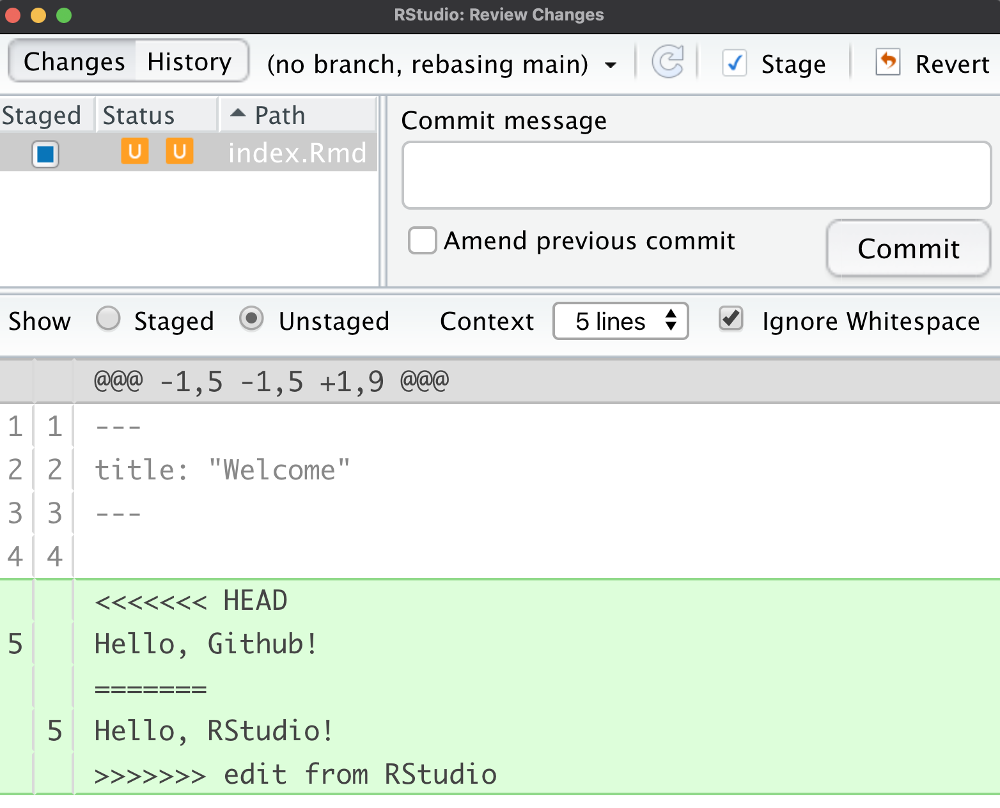
The orange U refers to an Unresolved conflict. We now need to “manually resolve this conflict”. The conflicted portions are compared above and below the =======. The conflict begins with <<<<<<< HEAD referring to the most recent commit from the ORIGIN on Github, versus ending with >>>>>>> edit from RStudio as the most recent LOCAL commit. Let’s change the entire contents of this file to:
---
title: "Welcome"
---
Hello, everyone!Then in the Git pane mark index.Rmd as Staged, Commit and enter the message “resolved file conflict; fixes #1”:
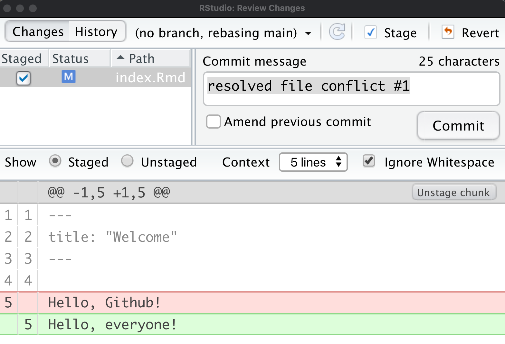
Commit this change and notice that we’re still “detached”:
[detached HEAD 216c243] resolved file conflict #1
1 file changed, 1 insertion(+), 1 deletion(-)Next, we need to associate the detached HEAD with a new temporary branch and reset the main branch with it before pushing changes back to Github. Please run the following commands in the RStudio Terminal:
# associate detached HEAD with new branch temp
git checkout -b temp
# reset master branch with temp branch as starting point
git checkout -B main temp
# delete temp branch
git branch -d temp
# update Github with local main
git push origin mainFor more details, see git - How can I reconcile detached HEAD with master/origin? - Stack Overflow.
Now visit https://github.com/USER/r3-exercises/issues/1. You’ll notice that your commit message automatically associated with that issue by simply including #1 and closed it by prefixing the number with fixes.
The point is to be able to associate specific line by line file changes with fixing bugs and implementing new features of our code.
1.11 Organize Issues in r3-exercises Github Project
Let’s create a couple Issues with the following titles to cue up next week’s session:
read a csv and output a tableread a wide csv and output a long table
You should then see these at https://github.com/USER/r3-exercises/issues:

Now visit the Projects tab, so https://github.com/USER/r3-exercises/projects:
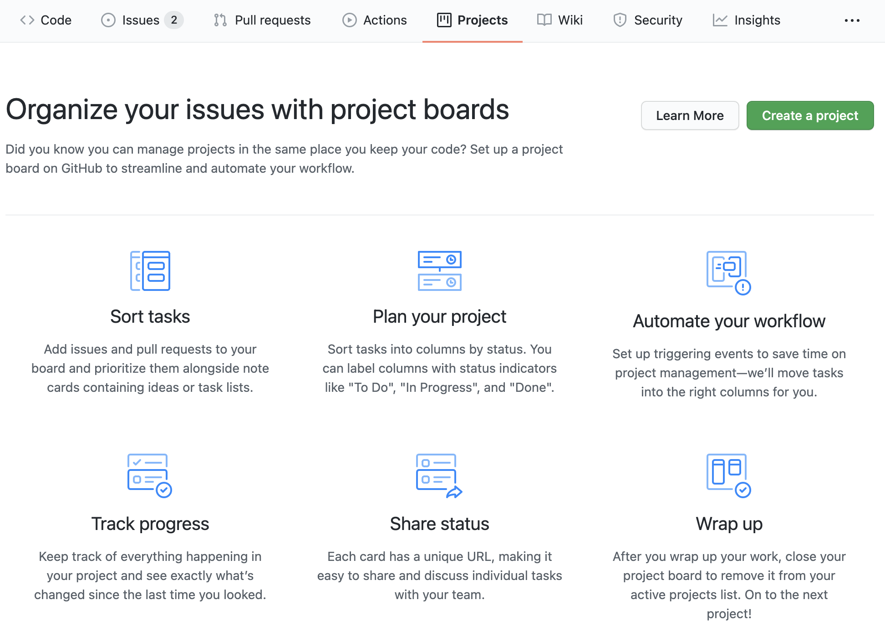
And click the Create new project button.

Choose the Automated kanban style and a title like “management” before clicking Create project. You’ll next be presented with options to drag existing issues over into any of the columns: To do, In progress or Done:
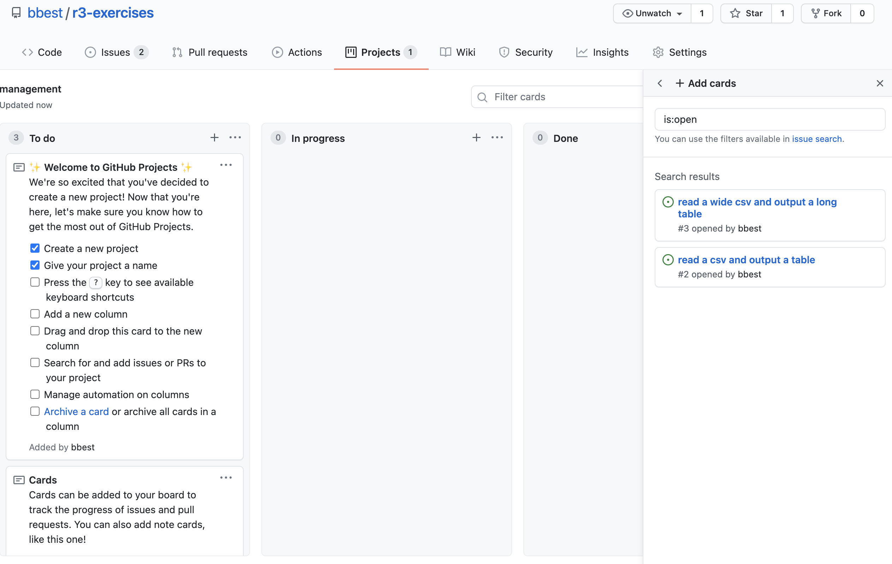
Drag the two issues over into In progress in the order of priority top to bottom:

A Project board helps answer the question, “What do I need to work on next?”